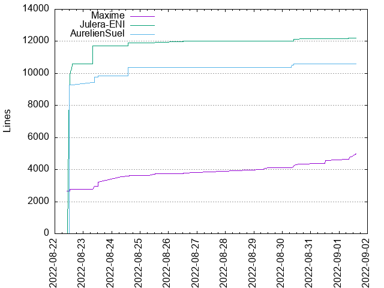
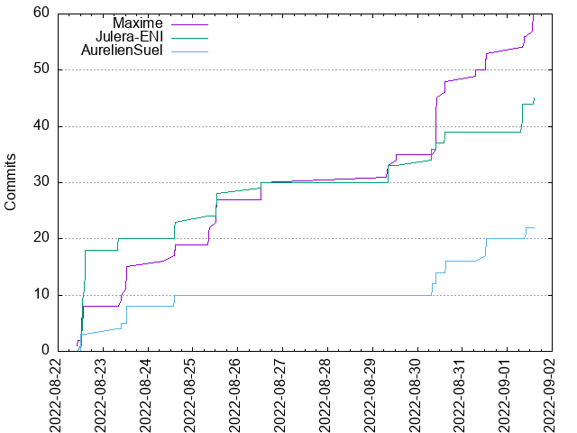

Authors
| Author | Commits (%) | + lines | - lines | First commit | Last commit | Age | Active days | # by commits |
|---|
| Maxime | 60 (47.24%) | 4961 | 1712 | 2022-08-22 | 2022-09-01 | 10 days, 3:44:50 | 9 | 1 |
| Julera-ENI | 45 (35.43%) | 12209 | 1482 | 2022-08-22 | 2022-09-01 | 10 days, 2:08:05 | 8 | 2 |
| AurelienSuel | 22 (17.32%) | 10608 | 1453 | 2022-08-22 | 2022-09-01 | 9 days, 22:10:40 | 6 | 3 |


| Month | Author | Commits (%) | Next top 5 | Number of authors |
|---|
| 2022-09 | Maxime | 7 (46.67% of 15) | Julera-ENI, AurelienSuel | 3 |
| 2022-08 | Maxime | 53 (47.32% of 112) | Julera-ENI, AurelienSuel | 3 |
| Year | Author | Commits (%) | Next top 5 | Number of authors |
|---|
| 2022 | Maxime | 60 (47.24% of 127) | Julera-ENI, AurelienSuel | 3 |
| Domains | Total (%) |
|---|
| campus-eni.fr | 67 (52.76%) |
|---|
| outlook.fr | 60 (47.24%) |
|---|